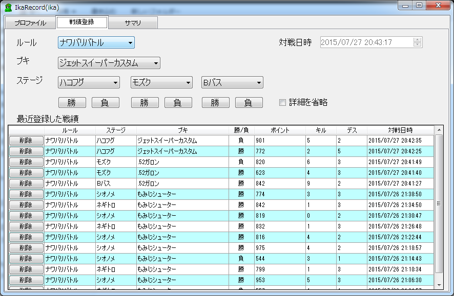

このツールでは任天堂様のゲーム、Splatoon（スプラトゥーン）の
戦績の管理が行えます。
こんな感じで登録して、

こんな感じに結果が出せます。
Windows7(32bit/64bit)
.Net Framework4.5.2での動作を確認しています。
1.0.0
リンク先の画面上部のアイコンからダウンロードしてください。
マスタファイル
右クリック ＞ 対象をファイルに保存 でダウンロードしてください。
ツール本体を解凍してできたフォルダに、マスタファイルを上書き配置してください。
2016/06/11
2016/04/14
2016/01/22
2016/01/16
2016/01/09
2016/01/01
2015/12/29
2015/12/25
2015/12/19
2015/12/12
2015/12/05
2015/11/28
2015/11/25
2015/11/21
2015/11/18
2015/11/14
2015/11/11
2015/11/07
2015/10/30
2015/10/17
2015/10/10
2015/10/03
2015/9/26
2015/9/18
2015/9/12
2015/9/6
2015/8/29
2015/8/21
2015/8/15
2015/8/6
2015/8/1
2015/7/27
最終更新日：2016/04/14